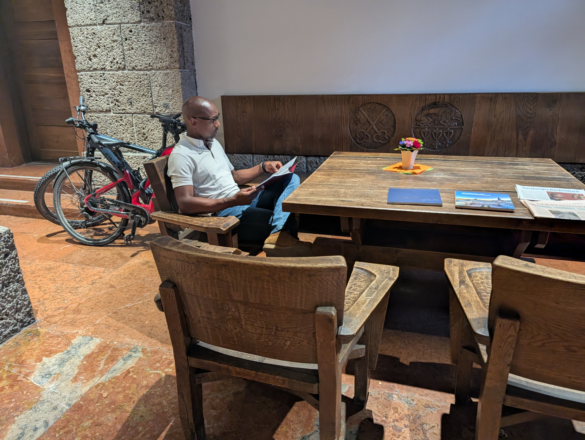

O'Neill School of Public & Environmental Affairs
Teaching & Pedagogy
Dedicated to academic excellence, evidence-based policy education, and public finance instruction at Indiana University Bloomington.

P-710
Microeconomics for Public Policy
Graduate-level course introducing microeconomic theory, market structures, consumer choices, and public policy applications.
F-609
Sem in Revenue Theory & Administration
Advanced seminar evaluating public revenue systems, tax policy design, administrative efficiency, and tax morale.
V-186
Intro Public Budgeting & Finance
Foundational course examining public sector budgeting processes, revenue sources, and fiscal management principles.
V-374
Intermediate Public Budgeting and Finance
In-depth econometric and policy analysis of state and local budgeting systems, debt financing, and intergovernmental fiscal relations.